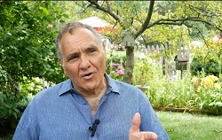

TrumpExperts.com
When in doubt (about any issue, large or small)
Consult the experts!
Need a mechanic? Dentist? President? Ask for references!

The video is done - and it's free
for any non-profit uses (63 minutes)
BACKGROUND: In April of 2024 I wrote to (and
emailed) about 25 ex-Trump employees and associates quoted in various
lists of critics, asking them to let me interview them for this project.
My idea was that all these critiques should be in one place, where those
who most need to see them might find and consider them. Eight other ex-associates are portrayed by re-enactors (speaking their
exact words, as publicly available). As for Mr. Scaramucci's interview, I will say he
provides a very broad, honest non-judgmental view of Trump's appeal and
his faults, in a thoughtful historical, psychological, and moral context.
PRESS RELEASE & PHOTOS CLICK HERE
Interview on KTRC-AM Santa Fe 8-19-24 (17:40) edited
These videos have gotten over 72,000 views so far,
but need to be more widely seen. Please share!
Best viewed in 1080/HD setting, and full frame
Only one, Anthony Scaramucci, got back to me in the affirmative. And I'm
glad he did, for he provided a very thoughtful, in-depth interview, which is
a major part of this video. Well worth a trip to NYC for me, and the entire effort so far.
Thanks to those who provided funding and other assistance!
Jim Terr, producer
www.Patreon.com/JimTerr
Click on links below to see these re-enacted
interviews:

Rex Tillerson
Michael Cohen


Ty Cobb
Alyssa Farah Griffin


John Bolton
Gen. John Kelly


Stephanie Grisham
Gen. H.R. McMaster

FULL INTERVIEW -
ANTHONY SCARAMUCCI
Feel free to share these videos for any non-commercial purposes.
Full transcript at bottom of page
SHORT VERSION SCARAMUCCI (6
min.)
This video also posted directly on Facebook,
here
RELATED MEMES AND VIDEOS PROPERLY BELONG
ON A SEPARATE PAGE, SO HERE THEY ARE:
MEMES
VIDEOS
Video sample:
Click on headline below to read this article

| FIRST HAND REPORTS
(Compiled
from here and there): His longest-serving White House chief of staff, retired Marine Gen. John Kelly, delivered an incredible rebuke of Trump’s personality and leadership in an on-the-record statement to CNN’s Jake Tapper. “What can I add that has not already been said?” “A person that thinks those who defend their country in uniform, or are shot down or seriously wounded in combat, or spend years being tortured as POWs are all ‘suckers’ because ‘there is nothing in it for them.’ A person that did not want to be seen in the presence of military amputees because ‘it doesn’t look good for me.’ A person who demonstrated open contempt for a Gold Star family – for all Gold Star families – on TV during the 2016 campaign, and rants that our most precious heroes who gave their lives in America’s defense are ‘losers’ and wouldn’t visit their graves in France."
“A
person who is not truthful regarding his position on the protection of
unborn life, on women, on minorities, on evangelical Christians, on
Jews, on working men and women,” Kelly continued. “A person that has no
idea what America stands for and has no idea what America is all about.
A person who cavalierly suggests that a selfless warrior who has served
his country for 40 years in peacetime and war should lose his life for
treason – in expectation that someone will take action. A person who
admires autocrats and murderous dictators. A person that has nothing but
contempt for our democratic institutions, our Constitution, and the rule
of law.
(more from Kelly
below)
2. His second attorney general, Bill Barr: “Someone who engaged in that kind of bullying about a process that is fundamental to our system and to our self-government shouldn’t be anywhere near the Oval Office.” 3. His first secretary of defense, James Mattis: “Donald Trump is the first president in my lifetime who does not try to unite the American people – does not even pretend to try. Instead he tries to divide us.” 4. His second secretary of defense, Mark Esper: “I think he’s unfit for office. … He puts himself before country. His actions are all about him and not about the country. And then, of course, I believe he has integrity and character issues as well.” 5. His chairman of the joint chiefs, retired Gen. Mark Milley, seemed to invoke Trump: “We don’t take an oath to a wannabe dictator. We take an oath to the Constitution and we take an oath to the idea that is America – and we’re willing to die to protect it.” 6. His first secretary of state, Rex Tillerson: “(Trump’s) understanding of global events, his understanding of global history, his understanding of US history was really limited. It’s really hard to have a conversation with someone who doesn’t even understand the concept for why we’re talking about this.” (He also called Trump a moron). 7. His first ambassador to the United Nations, Nikki Haley: “He used to be good on foreign policy and now he has started to walk it back and get weak in the knees when it comes to Ukraine. A terrible thing happened on January 6 and he called it a beautiful day.” 8. His presidential transition vice-chairman, Chris Christie: “Someone who I would argue now is just out for himself.” (Christie has had volumes more to say since this article) 9. His second national security adviser, HR McMaster: “We saw the absence of leadership, really anti-leadership, and what that can do to our country.” 10. His third national security adviser, John Bolton: “I believe (foreign leaders) think he is a laughing fool.” 11. His second chief of staff, John Kelly: “A person that has nothing but contempt for our democratic institutions, our Constitution, and the rule of law. There is nothing more that can be said. God help us. (continued from above): Kelly is confirming, on the record, a number of details in a 2020 story ... including Trump turning to Kelly on Memorial Day 2017, as they stood among those killed in Afghanistan and Iraq in Section 60 at Arlington National Cemetery, and saying, “I don’t get it. What was in it for them?” ..details also include Trump’s inability to understand why the American public respects former prisoners of war and those shot down in combat. Then-candidate Trump of course said in front of a crowd in 2015 that former Vietnam POW Sen. John McCain, an Arizona Republican, was “not a war hero. He was a war hero because he was captured. I like people who weren’t captured.” ...this lack of understanding went on to cause Trump to repeatedly call McCain a “loser” and to refer to former President George H. W. Bush, who was also shot down as a Navy pilot in World War II, as a “loser.” “There is nothing more that can be said,” Kelly concluded. “God help us.” 12. His former acting chief of staff, Mick Mulvaney, who resigned as US special envoy to Ireland after January 6, 2021: “I quit because I think he failed at being the president when we needed him to be that.” 13. One of his many former communications directors, Anthony Scaramucci: “He is the domestic terrorist of the 21st century.” 14. Former communications director, Stephanie Grisham: “I am terrified of him running in 2024.” 15. His secretary of education, Betsy DeVos: “When I saw what was happening on January 6 and didn’t see the president step in and do what he could have done to turn it back or slow it down or really address the situation, it was just obvious to me that I couldn’t continue.” 16. His secretary of transportation, Elaine Chao: “At a particular point the events were such that it was impossible for me to continue, given my personal values and my philosophy." 17. His first secretary of the Navy, Richard Spencer: “…the president has very little understanding of what it means to be in the military, to fight ethically or to be governed by a uniform set of rules and practices.” 18. His first homeland security adviser, Tom Bossert: “The President undermined American democracy baselessly for months. As a result, he’s culpable for this siege, and an utter disgrace.” 19. His former personal lawyer and fixer, Michael Cohen: “Donald’s an idiot.” 20. His White House lawyer, Ty Cobb: “Trump relentlessly puts forth claims that are not true.” 21. A former director of strategic communications, Alyssa Farah Griffin: “We can stand by the policies, but at this point we cannot stand by the man.” 22. A top aide in charge of his outreach to African Americans, Omarosa Manigault Newman: “Donald Trump, who would attack civil rights icons and professional athletes, who would go after grieving black widows, who would say there were good people on both sides, who endorsed an accused child molester; Donald Trump, and his decisions and his behavior, was harming the country. I could no longer be a part of this madness.” 23. A former deputy press secretary, Sarah Matthews: “I thought that he did do a lot of good during his four years. I think that his actions on January 6 and the lead-up to it, the way that he’s acted in the aftermath, and his continuation of pushing this lie that the election is stolen has made him wholly unfit to hold office every again.”
24. His final chief of staff’s aide,
Cassidy Hutchinson: “I think that
Donald Trump is the most grave threat we will face to our democracy in
our lifetime, and potentially in American history.” |

MORE STORIES OF A SIMILAR NATURE (click on them to read)

Click on image to see article

To give you an idea of where I (the producer) am coming from, here is a letter I
wrote
about the "culture wars," published July 11, 2024, in The Tennesseean
(Nashville). I am as
concerned about demagoguery and the culture wars in general, as about Mr.
Trump:
| Tractor Supply controversy benefits
‘culture war’ profiteers Re: “Tractor Supply caved to anti-DEI pressure. Their promises were too good to be true,” by David Plazas. I don't know how much our local Tractor Supply store has been affected by this, but I think it's worth examining, since it's at the heart of a nationwide trend infecting our politics: A right-wing blogger targeted Tractor Supply because a lot of their customer base is rural and therefore good targets, and ginned up a campaign to get them to denounce their stated support for DEI (Diversity, Equity, Inclusion), LGBTQ, and environmentalism. Some customers dutifully complained, and the company put out a statement walking back those positions, that probably doesn't charge any of their actual policies or compliance with federal rules. And now the left wing is attacking and boycotting, exactly as intended, right on time and right on script. And everybody gets to feel self-righteous. This is a perfect example of how easy it is to stir up the culture wars and everybody loses. The culture war and those who promote it are the problem here. Personally, I don't ultimately care whether Tractor Supply “supports” LGBT, DEI, or environmental causes. I appreciate those companies who do, though many of them probably just do it for appearances in the first place. What I care about is that people don't get so easily sucked into this “Civil War.” Those who promote it will not be participating, just sitting on the sidelines, chuckling and profiting. Jim Terr, Las Vegas, New Mexico 87701 |
TRANSCRIPT OF SCARAMUCCI INTERVIEW ABOVE I'll take you through my personal odyssey. I got raised as a Republican primarily because my dad's union was controlled by the Republican Party in Nassau County. And so when I registered to vote, I asked my dad, am I a Democrat or Republican? He said, oh, no, you're a Republican. And then that was the age of Ronald Reagan. I grew up, the first president I voted for was Ronald Reagan. I had the opportunity to vote for him in 1984. I turned 18 in 1982. And so, you know, America had a love affair of Ronald Reagan. Ronald Reagan's values, it turns out, were way more centrist than ultimately arch conservatism. And I ended up supporting George W. Bush. And then I worked in Republican Party fundraising when I left Harvard Law School in 1989. And so that was a ticket for me to meet people that were wealthy and influential. And so that's my odyssey in the Republican Party presidential politics. I did support Barack Obama in 2008 primarily because I had gone to law school with him. And I thought that how would I ever meet anybody that's actually going to be potentially the president, let alone the president? And so I supported President Obama or then Senator Obama. But I returned to my Republican roots in 2012, it's important to explain it this way, because I'm a classic New York entrepreneur. And I would describe myself as a New York Republican. So what does that mean? We are socially inclusive. We like to say that we're fiscally responsible. So I don't use the words liberal and conservative, why? I feel like the word liberal, billions of dollars have been spent on that word to destroy that word to half of the population. Additionally, billions of dollars have been spent on the word conservative to destroy that word to people in the country. So I say I'm socially inclusive and I'm physically responsible, and so there's no place for me any more in either of these two parties, unfortunately, but that's where I was. When I left the Romney campaign in 2012, there was an initiative inside the Republican Party to open up the party and to make it more pro -immigration and to make the party look like the beautiful, colorful mosaic that the American people is becoming, frankly. Our country's mosaic is becoming more beautiful and more colorful over the years, and it would be important as good entrepreneurs and good stewards of Abraham Lincoln's party to have that party reflect more of what America is becoming. Unfortunately, in 2016 we went in the other direction, sort of the last gasp of white-ism, if you will. And I unfortunately bit the apple and I went with Donald Trump. Now, why did I do that? I can equivocate. I can offer all different types of explanations. I'd rather not do that. I'd rather just be responsible for my decisions and rather look you straight in the face and tell you that I made a mistake doing that. It was a lifelong Republican. I thought it was the loyal and responsible thing to do to support the Republican candidate, even though there were aspects of the man's personality and there were aspects of what he was saying and what he was thinking that he didn't 100% agree with. I was doing the classic cognitive dissonance to be with Donald Trump and with the campaign. And then, of course, on that fateful day, November the 8th, 2016, where none of us thought he was going to win, he actually won the election. Of course, he lost the popular vote, but he won the election through the Electoral College. And when he was elected president, there was a level of excitement and there was also a level of trepidation. In fact, I can remember then President-elect Trump himself was actually cautious on the Wednesday and Thursday after the election. I think he had realized the magnitude of what had just happened. And so he was actually acting a little bit more temperate. We put together a transition team of which I was one of the executive chair people on that transition team. There's probably 16 of us on that team. I walked over to Trump Tower, which is a few blocks from my office here. And we began the process of building his administration. At that time, we were staffing it with what I would describe as loyal Republicans, lots of centrists, lots of mainstream Republican thinking mixed in with what we would call now the MAGA people represented by Steve Bannon and others. And so my mistake, and perhaps one of my flaws is my ego, I was offered a job in the Trump administration to be the White House liaison. There was a guy by the name of Reince Priebus that hated me, but it was politics. So these guys act like howdy-doody to your face, and they tell you how great you are while they're stabbing you in the back. And so I misread the guy, unfortunately. And so he blocked that position. And that's where I should have just stayed here in New York. But my ego and my pride got the best of me. When Donald Trump offered me the job as White House communications director, I took that job. It was the 21st of July in 2017. 11 short days later, I got fired from that job. And there are lots of different reasons why I got fired. But the main one was I was in violent disagreement with a lot of the things that were going on inside. the West Wing, especially the stuff that Steve Bannon was thinking, and especially some of the stuff that Steve Bannon was planning. And so the good news is, I got Steve fired alongside of Reince Priebus and myself when I left. And the other very big part of my story, which I'm going to share on this camera, is I didn't fully understand Trump's malevolence until I got into the White House. And there were a number of different things that he was suggesting that he wanted to do that were frankly unconstitutional, they were illegal, and they were outside of the auspices of his office, actually. To really understand the American Constitution, the founders set it up so there'd be lots of checks and balances, founders set it up so that the government itself would be decentralized and that there would be a diffusion of power at the top so that no one person could take control of anything. I think the founders understood in their great historical wisdom that power is a corrupting force. And any one person at the top of the food chain could create what we've seen in these other nations that have authoritarian leadership, kleptocracy, oligarchy, lack of predictability of laws, a failure of the meritocracy. And ultimately, you get this sort of split where the top one or 2% of the people are doing very well and the rest of the people are doing very poorly, very classically un-American and a disavowal of all the ideas of America. And so I basically wanted to renounce it at that time, but I felt like I needed to be loyal to the president even though I had gotten fired. So it took me two years. In August of 2019, I finally spoke out against some of the nonsense and tried to explain to people that he could no longer be president. We would have to find somebody and elect somebody other than Donald Trump. So I think it's important. It's important for people to understand that the fragmentation of the media now, which allows us to be in our own little echo chambers of positive reinforcement of our own ideas, has actually hurt the country. It's created greater polarity in the country. When I was growing up as a kid, we had three networks. Those three networks had news organizations, and those news organizations more or less played it up the middle. There could have been liberal influences in those news organizations, but they were, by and large, giving you the news. CNN also did that in the early part of CNN's history. As the news started to fragment and the media started fragmenting with the introduction of all this new technology, we now have these echo chambers. Foxx represents that on the right, MSNBC and CNN, by and large, represent that on the left. What they do is they're great psychologists. They press trigger points on people, to trigger them to get them upset about certain things. And so one of the things that's happening in our society right now, there's a great culture war. There's a group of Christians and Christian conservatives. They would like to live a certain way. And then of course, there's a group of people who may have a different sexual orientation than your own. And they also would like to express their freedom and live a certain way. And so one of the big issues for somebody like me is, so what, why don't we just let people cohabitate and live peacefully on both sides of that divide? And what is the big deal? That's classically American to live your unique story here in America and to live with your general level of freedom provided that you're not creating any harm to anybody else. But unfortunately, both these cultures, they want to force their lifestyles down each other's throats and they want to judge and condemn each other. And so this is a big problem in the society today. The Republicans, though, play meaner and they play a little tougher. And they have this great demagogue as their leader now, Donald Trump. And so a group of ultra right Christian conservatives have coalesced around Donald Trump. They're way more organized than we were in 2016 and they're way more organized than they were in 2020. And this group has put out a 925 page manifesto, which is called Project 2025. And so I would encourage you to read it or read the highlights of it or you could even go to John Oliver, the famous HBO comedian. He did a 22 minute exposition of what Project 2025 actually is. (See https://youtu.be/gYwqpx6lp_s?si=RqfhzL1RrYLVQ4RM ) And so it is basically a fascist agenda for America. It calls for more autocracy. There is a concept called unitary executive power. This is a concept that actually Dick Cheney invented in the early 2000s, but it's now turned to this Frankenstein monster under the Heritage Foundation and Donald J Trump and they would like to empower the presidency and make the presidency sort of this super strong branch of the government while liquidating the judicial and the legislative branches Of the government and so they want to ban things like contraceptives. They want to ban abortion Which probably means they also want to put a ban on IVF over over long periods of time. They have goals to eliminate levels of Social Security and Medicare and Medicaid If you read the thing, it is a dystopian Manifesto for America, it's sort of like these anarcho Christians are going to take control of the country. And then they're going to press their value system and their culture upon everybody else one one thing that really I find absolutely reprehensible is and Donald Trump talks about this from the stump all the time. He wants to deport 15 million people from the United States. Now, some of them perhaps have gotten here illegally. Some of them may or may not have gotten here illegally, but illegally, but it'll mostly be black and brown people that are being deported. But then the real question is, so tell me the process of how you're going to do that. So you're going to drive around in Handmaids Tale armored vehicles with SWAT teams pulling people out of their homes? It's one of the ways that they have to get this done. And then, of course, where are you going to put these people? But you can't just fly them to other countries. They have to be processed in other countries if you're, quote unquote, deporting them. And so then, of course, you have to put concentration camps together, these sort of deportee concentration camps. And so they don't blanch at this, by the way. They say, yeah, that's exactly what we're going to do. That's going to be the process. And so there's a menacing nature to this. There's a meanness to this. And there's a lack of humanity to this. And this is political leadership that represents something that I don't think America stands for. When you read the teachings and the writings of somebody like Abraham Lincoln, this is antithetical to everything that Lincoln would have represented. Listen, I worked for 11 days intensely inside the White House, but I did work for nine months on Mr. Trump's campaign. I did 71 campaign stops alongside hundreds of hours of media advocacy on his behalf and the Republican Party in the 2016 election. So Mr. Trump is driven by two things. Number one is attention and self -glorification. And then the second thing is money. And depending on the day, they rotate. Those are the things that are sort of tied for number one, those two things. And so serving people, not on the list, caring about the direction of the country not on the list, taking the totems of victimization, taking the totems of American nativism, very much so on the list. This is a form of racism. Trump talks about America first, and he talks about making America great again. Well, the first America first movement took place in the late 1930s. It was driven primarily by the aviator Charles Lindbergh, Huey Long, the great populist leader in Louisiana, and also Father Coughlin, who had a radio show that talked about American nativism. And they told people like my grandmother, who was an Italian immigrant, to go back to the countries they originally came from. And so this sort of nonsense has been in America. Those people wanted a fascist rise in America in the 1930s, concomitant to the rise that took place in Nazi Germany or fascist Italy, and so the good news for the United States is we had a very crafty, very skilled political leader in Franklin Roosevelt, and he put that group down, and it was once remarked that Roosevelt had the skills of a dictator, but he was on our side. He was for liberty, and he was for the democracy, and so he put that down. The problem with all this is that the United States has no hereditary memory of the plague of fascism. If you go to Europe, if you're in the United Kingdom, on school tours, you go see the Church of War cabinets, or you view parts of London that were blitzed or parts of the Midlands that were destroyed by the Nazi bombings. If you're in France, you go to Normandy. If you're in Germany or Poland, you go to Auschwitz and see the horrors of the concentration camps. And so Republican or Democrat, Tory or liberal, 75% of the people in Europe can't stand Donald Trump because they see the specter of what he represents. Now some will say, well, he's just a narcissist, he's not a political ideologue, and he does not really weld it to any of these positions, and everything will be fine. And so this is the type of cognitive dissonance that I was saying to myself in 2016, but it's just not true. Because what happens with demagogues like this is the real malevolent forces in a country attach themselves to this level of demagoguery. And so I would submit to people listening, there's a great man view or a great woman's view of history. I believe that our founders was a great group. It was primarily men, a large group of people, 50 or 60 or so that developed the Constitution, created the Declaration of Independence. It was a great group in history, a very bad group in history was the Nazis. It wasn't Hitler alone. It was a legion of these people. They took over a sovereign nation and they were murderous thugs. Now, I'm not comparing Donald Trump. to Adolf Hitler. But I am comparing Donald Trump to demagoguery. I am comparing Donald Trump to nativism and racism. And I am telling you whether you believe he's politically ideological or not, the people that are now working for him are using him as a vessel to project and promulgate their ideology and to put policies together that are very damaging to the United States and very un -American. So examples of American nativism is that this is a white Christian country. Well, that's actually not true. The country is based on an idea. It's a constitution that was put together where the First Amendment of the Constitution is freedom of religion and freedom of speech and freedom of expression. But there's a group of nativists that feel while it was founded by white Christians and so therefore this should have a permanent anchoring to white Christian theology. Second thing is that it's racist now. Listen, the United States has a long History of racism, we had a stain in the original documents of the Constitution where we had all this great flowery language about equal rights and all men and therefore all women being born equally and yet we had people in the country that were treated as three-fifths of people as American slaves and so so we had to heal the nation. I think Lincoln's point was that this is an imperfect union, but it's a union that's striving to make continual progress and so Nativism doesn't represent that. Nativism is it's my way or the highway Nativism is let's wall off the country literally and figuratively from the rest of the world. You know, he probably doesn't even understand the view that he's speaking for. But guys like Steve Bannon, these malevolent actors, they actually do, and so what is their view of the world in the United States? Well, they want to isolate the United States They want to wall off literally and figuratively the United States from the rest of the world They want to reject black and brown people. You don't believe me, just read the documents. That's essentially what they want to do. Therefore they're not equal to the rest of us. It's almost it almost goes like this: So are white people gonna run the country? Yes. Okay, then we can have a democracy. Okay, so wait a minute, black and brown people are going to be the majority of the people in the country? Well, yes likely now Demographically, they will be, okay. That means they'll be black and brown people in leadership. Yes, there will be. Okay let's change the rules then of the democracy. And so you see this is incredibly dangerous because number one, White people are not necessarily smarter or better than black people. We all have to to be measured the way Dr. Martin Luther King Jr. suggested, that we should measure the content of our character and our intellect and our capacity to love each other as opposed to the color of our skin. And so the nativists don't actually believe that. And so if you don't believe me, go to the rallies, watch them with their hoods on and they're carrying their white Christian nationalist symbols, or they're carrying the American flag and perverting patriotism into this sort of perverse nationalistic demagoguery. And so I have to speak out against it because I have five children, I love my country. I'm a product of the American success story. My grandparents came here with nothing. If you go back through the Napoleonic Code in Italy, you'll find that my ancestors are tenant farmers, they're day laborers. If you go back 200 years, you'll find people in my gene pool that were actually serfs, they were farming land of, they were called feudal farmers, okay, which is a form of slavery. And so I just imagine people from my ilk, from southern Italy, coming to the United States and rising here in the United States, going to places like Harvard Law School or Goldman Sachs or building a hedge fund operation like this,or even getting a chance as in opportunities as it was to work in the White House. These are the idols, these are the greatness, these are the representations of the American dream. And so since I've lived a good part of that in my life, I love this country, I love the ideas of this country, I love the ideals of the country. And as Lincoln would say, we have to appeal to the better angels of our nature, not to the viciousness, not to the primordial tribalism of our nature, but to the inclusion. Because we know, as Lincoln said about the country, this is the last best hope for mankind, is this great nation that isn't tied to a race, isn't tied to a bloodline, but it's based on an idea. I think that the current America First movement believes that the country was founded by white Christians. Now, the irony is that we know about the founders, and many of them were deists where they believed in some sort of creator or some sort of God, but they weren't necessarily grounded in any religious fundamentalism. In fact, Thomas Jefferson's Bible, he believed in a lot of the principles in the Bible, but anywhere where there was a reference to God or Jesus, he had it excised from the Bible. He was trying to make the point that taking the religion out of the Bible and just looking at it as a guidebook, there was a lot of good foundational principles that could be used to help govern and to help organize a civilization. So there's lots of irony to the Christian current Christian fascist movement But I do think it's clear that the country was founded by white people and it was founded primarily by white men And so there's a group of supremacists in this country that believe as a result of that that they're supreme relative to other people. Which of course is a bunch of nonsense. I think it's important to understand that a lot of the people that founded this country left countries where they felt some level of religious persecution. I think it was important for them to come here and to allow other people To practice their religion to profess their faith or they didn't have faith that they were atheists to profess that as well, and so I think that there's Look, it's an amazing country. It's a country loaded with faults and it's a country loaded with apocracies and contradictions. But the template of the country has allowed for a very wide group of people demographically to grow and it has primarily been a merit -based society. Yes, there are pockets of aristocratic behavior and there are pockets of wealthy people and there's a potential permanent wealthy class of people in the country, but there is a beauty to this country that Abraham Lincoln expressed in his diary that the beauty of the country is that there's no permanent labor class. If there was, I would certainly be a part of that, given my ancestry. And so this is the dynamic in the country that is beautiful and this is the dynamic in the country that requires transformational political leadership today as opposed to this kind of short-sighted, dim-witted, race-baiting, race-led leadership. Even if you believe in some of the pro-business dogma of Donald Trump, up against that is a man that's trying to pit people against each other and trying to create this very polarized, very tribal society and that's not what America should represent. What happens with Donald Trump, unfortunately in our society, we broke the social contract. If we're going to be brutally honest with each other, our political leadership, the establishment left behind a large group of people. And so this is a group of people that Franklin Roosevelt embraced. This is a group of people that Lyndon Johnson embraced, believe it or not. Ronald Reagan actually embraced these people because he put together one of the first acts as president. He put together a Social Security Commission, which was led by Alan Greenspan, prior to him becoming the Federal Reserve Chairman to maintain and preserve Social Security. So you had Democratic and Republican Party leadership that were helping working class people and that were helping indigent people. And I can speak from my own life experience. I grew up in a blue collar, but aspirational family. We believed in economic aspiration. And my father thought that some of us were gonna go on to live the American dream. And he worked very hard for that to pass that baton. But the forces of globalization, the forces of offshoring manufacturing, the forces of things like NAFTA, the World Trade Organization agreements and things like this, hollowed out large areas of our manufacturing and hollowed out a lot of these small towns and small cities. And so when I traveled with Donald Trump into these cities, there were forgotten men and women these cities, there's a good 25% of the people that feel disaffected from the system. These once blue-collar, aspirational, economically aspirational people have now become blue-collar desperational. And they don't like the establishment. They don't like the political establishment. They don't like the medical establishment. They don't want to take the vaccine. They don't like the media. They certainly don't like Big Pharma or politics, if you will, big politics. And so Donald Trump is an avatar for their anger. And so they see him as a representative of the things that they don't like about the country. So even though he is a charlatan, and even though he's a con man, and even though he's a congenital liar, what Mr.Trump said is true: He could shoot people on Fifth Avenue, and he would still have a high level of support because there's been a vacuum of advocacy for these people. Now, the great irony of all of this is that Joe Biden, in the last three and a half years, has put three or four major pieces of legislation through that are actually helping these people. The CHIPS Act, we're rebuilding microprocessor foundries in the United States. The infrastructure bill, we're rebuilding bridges, roads, and tunnels in the last 30 years. And of course, he has the $250 billion onshoring project that he's working on to rebuild manufacturing in the United States. And so the great irony is because the president's age and his stutter, he is having a very hard time articulating this economic agenda that it's helping the people that are supposedly for Donald Trump. So there's a lot going on at the same time. There's his unbreakable support is a result of these people feeling left out of the system. Trump has a high floor, but he also has a low ceiling. And so people that really get to know him, that look at his entire resume of different things that he's done as his life, that's not a guy that I would want close to my family, that's not a guy that I would want as a role model for my children, that's not a guy that I would want to run the country. And I will leave you with this thought, in the 11 days that I was there, Trump has no executive management skills. He's not able to direct or delegate people appropriately. He's not able to set up a vision really, that he's going to project to make the country better. He said he was going to balance the budget, he created $8 trillion of deficit spending on his watch. And just to give you a sense of what $8 trillion of deficit spending is, we went from George Washington to George W. Bush and created $7 trillion of deficit spending. So Donald Trump eclipsed them in a four year term. So this is a super dangerous person to put in this job at this critical hour in our democracy in this critical hour where 5.7 billion people, 5.7 billion travelers on this planet we call earth are under the aegis of authoritarianism, under the aegis of dictatorships around the world. The United states represents a beacon of liberty and a beacon of hope for western liberal democracy and so we need somebody at the top of the United States right now that understands that and will project that and will preserve that We're at a moment of extreme danger and it's very important for people like myself to explain what that is to the best of our capabilities so at least we can tell the american people that they've warned before they go down a path they revisit a path that would potentially include Donald Trump. The only thing i can say to you is that Mr Trump is a well -known guy, most people are low information voters, the presidency is won by a number of different factors but the number one factor is name recognition, and i think Mr Trump represents to people that are doing a cursory examination of the situation he represents a man of business success as perpetuated on the show The Apprentice and so he's also somebody that believes in this nativism and there is unfortunately a good 15 to 20 percent of the country that also aspires to nativism. It's never been a majority of the country thank God but it is part of this country and he represents them and there is a path for him uh through the electoral college but there isn't a path of popularity. He's never gotten above 50 even in his approval rating, he's never got above 50 in the two popular vote elections that that he was a part of, he wouldn't get above 50% this time, for that matter, in 2024. So we'll have to see what happens, but I understand it. And I'll try to do the best I can to explain it to other people. If you are aggrieved, if you feel that your children are going to do worse than you did, if you fear foreigners and you have this atavistic desire to keep what is yours and be tribal and play the victim, you're playing right into the hands of Donald Trump. This idea of FY-ism is pretty accurate when it relates to Donald Trump because Mr. Trump has consistently been an outsider. Mr. Trump has always been somebody that's felt left out of things. There's almost like a chip defect of self -esteem inside of his personality. (See video he's responding to mention of https://youtu.be/jUS8QAMR_tA?si=75S-dkIV0Qn9PoJ2 ) I have never met in my life somebody as insecure as Donald Trump. And so this insecurity has manifested itself in this hyper masculinity, this insecurity has manifested itself in the bullying and the demeaning of others. It's very un-American and it's very uncharacteristic of what Americans like. Americans typically like the underdog personality who is a go -for-it type of person who loves other human beings and wants to pull people together. And so Mr. Trump represents none of that. This is almost like a nihilistic junket for Mr. Trump. "I'll show you, you didn't want to include me in your country club, you didn't want to include me in your wealthy reindeer games. So I'll show you by being the orange wrecking ball to your society, I'll show you by smashing into all of these institutions that you supposedly don't want me to be a part of." And so this is sort of this anger based agreement, same time that that's going on, he's favoring fascists and he praises them. And so one has to wonder what that's all about as well. I think he wants to be part of the axis of this evil fascism that's going on in the world and he would like to be the North American fascist. He sees Putin as the Eurasian fascist, Xi as the Chinese fascist, and he wants to be a part of this club with them. And it's absolutely reprehensible. It's un-American. We don't want that in our society. And remember, the nation's economic prosperity is born from great industry and entrepreneurship, but there's also two things that the government does, to assist us. Number one is the predictability of our laws.And number two is the fact that we have this flat power structure at the top allows us to succeed without somebody sort of checking our success or corrupting or blackmailing us and doing all of these nefarious things that get done in these totalitarian states. And so we have to do our best to preserve that if we want our children to grow up in an aspirational America. |